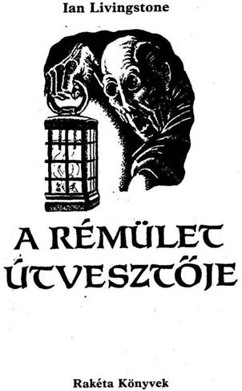
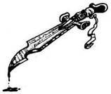
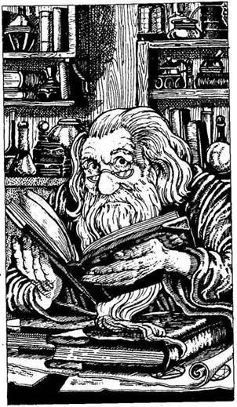

A mű eredeti címe:
Temple of Terror
Bill Houston illusztrációival
A fedélgrafika Christos Achilleos munkája
Fordította:
Varsányi Mária
© Ian Livingstone, 1985
Cover illustration copyright © Christos Achilleos
Illustration copyright © Bill Houston, 1985
All rights reserved.
Háttértörténet
Malbordus talán azért volt olyan gonosz, mert teliholdkor született és farkasok üvöltöttek anyja erdei kunyhója körül. Az is lehet, hogy születésekor még ennél is sötétebb dolgok történtek. Az azonban bizonyos, hogy miután az anyja elhagyta, Malbordus a Fekete Erdőben nőtt fel, és a Fekete Elfek viselték gondját. Elsajátította az Elfek gonosz trükkjeit, és felismerte, mekkora ereje van neki magának is. Csak csettintenie kellett az ujjával, és lekonyultak, majd elpusztultak körülötte a növények; egyetlen átható pillantása elég volt ahhoz, hogy az állatok engedelmeskedjenek neki. Az Elfek bátorították és segítették, hogy ereje kibontakozzék; ők tanították meg neki az Elf Urak misztikus és ördögi varázslatait - azokat a hatékony gaz varázslatokat, melyek megölik a hitványokat. Malbordusból, miközben e gonosz hatalmat elsajátította, férfi lett. Be akarta bizonyítani az Elfeknek: megérett rá, hogy elsajátítsa az Elf Urak tudományát, ezért egy próbának kellett alávetnie magát. Azt az utasítást kapja, hogy utazzék el délre, a Koponyák Sivatagába, és keresse meg Vatos letűnt városát. A városban öt Sárkányszobrot rejtettek el, és neki azokat kell megtalálnia és onnan elhoznia. Egy apró varázslással életre lehet kelteni ezeket a Sárkányokat, hogy a gonosz szolgálatába álljanak. Malbordusnak ezt követően utasítania kell majd a Sárkányokat, hogy röpítsék őt vissza a Fekete Erdőbe, ahol addigra már hatalmas sereg
fogja várni. Ekkor majd megkapja az ősi erőt, melynek segítségével a Káosz hadainak élére állva lerohanja Allansiát, halált és pusztulást hozva a vidékre.
Csupán a szerencsének köszönhető, hogy erre a szörnyűséges tervre fény derül. A Fekete Erdő szélén egy fura, Öreg varázsló lakik, akit Yaztromónak hívnak. Kissé különc módon egyedül él egy toronyban, ahol varázslással foglalkozik, valamint az állatokkal és madarakkal beszélget. Szívesen adogat el apróbb varázstárgyakat, és így megengedheti magának, hogy finom süteményeket rendeljen Allansia minden sarkából. Édesszájúsága egyetlen kapcsolata a külvilággal, s csak nagy ritkán hagyja el tornyát. Ezért aztán mindenki meglepődik, amikor nagy lihegések közepette megérkezik Kőhidafalvára. Vajon mi késztette arra az öreg Yaztromót, hogy útra keljen a Fekete Erdőn át Kőhidafahára? Az ott lakó Törpéknek ugyancsak furdalja az oldalát a kíváncsiság, és üzennek Gillibrannak, a királyuknak.
A legutóbbi hadjárat kellemetlenségeit pihened ki éppen Kőhidafalván, ahol a Törpék kellemes társaságát élvezed. Sérüléseid majdnem mind begyógyultak, és a helyi kovács remekül kikalapálta a kardodat, úgy, ahogy csak a Törpék tudják. A tornácon ülsz, lábadat a korláton pihentetve, amikor az előtted lévő téren zűrzavar támad. A Törpék tömegét követve Yaztromo megy fel a lépcsőkön Gillibran házához, ahol a király szívélyesen üdvözli, kezet ráz vele, Yaztromo pedig mond neki valamit. Felállsz a székedről, és követed a tömeget, hogy megtudd, vajon mit is mond Yaztromo. Az gyászosan, megnyúlt arccal közli a rossz hírt
Malbordusról... A Törpék aggódva tekintenek fel rá, hisz bármelyik pillanatban rájuk küldhetik az öt Sárkányt. Az öreg varázsló bátorságra szólítja fel őket, és így szól: - Barátaim, ne keseredjetek el! Hisz kedvenc varjam, aki véletlenül kihallgatta a Fekete Elfek és Malbordus beszélgetését, figyelmeztetett a veszélyre. Egyetlen dolgot tehetünk most, mégpedig azt, hogy keresünk valakit, aki még Malbordus előtt megtalálja az elveszett várost, és elpusztítja a Sárkányszobrokat. Félelmet nem ismerő fiatal harcosra van szükségünk, aki hajlandó akár az életét is áldozni értünk. Van-e ilyen harcos köztetek?

A Törpék egymásra néznek, és azt kutatják, vajon van-e köztük vállalkozó. Miközben Ott állsz, és az izgatott Törpéket nézed, rájössz, hogy itt csak egy dolgot lehet tenni. Erőltetett mosollyal az arcodon, karodat a magasba emelve felajánlod szolgálataidat. Amikor Yaztromo megpillant, így szól: - Nem láttalak én már téged valahol? Bár ez teljesen mindegy; te olyannak látszol, mint akire szükségünk van. Engedjetek utat a bátor önkéntesnek! Azonnal el kell mennünk a tornyomba! Gyere,
induljunk! Sok mindent meg kell tanulnod, de mindaddig, míg szerencsésen át nem jutunk a Fekete Erdőn a laboratóriumomba, nem sokat tehetek érted!
Alig van rá időd, hogy összekapd a holmidat, a türelmetlen Yaztromo máris kifelé vezet Kőhidafalváról, a Fekete Erdő déli csücskén át, a tornya irányába.
És most lapozz az 1-re!
